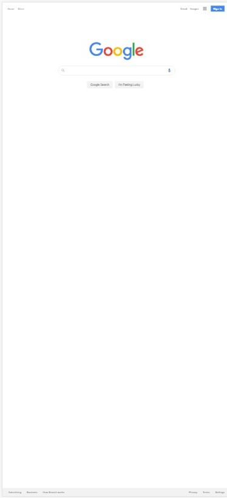
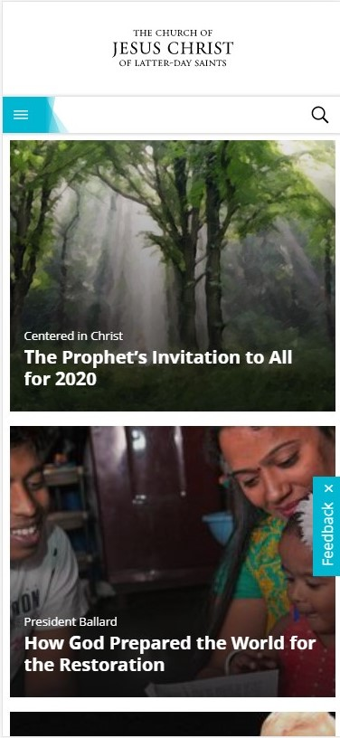

Fitt's Law
 GoogleGoogle does this by having the search box right in the center. It is the easiest to spot and click on.
PARAC: Allignment
 The Church of Jesus Christ of Latter-Day Saints>Churchofjesuschrist.org centers all its content and tools making it easy to scroll through topics and find information.
PARAC: Contrast
code.orgCode pulls off a fun contrast by using diffrent colors that all work well with each other. This helps a vistor of the page jump between elements and see things clearly.